Consultoria especializada em Redes, Infraestrutura de TI e Telecomunicações.
12 anos de experiência. Resultados reais.
Especialista em Redes & Infraestrutura de TI com 12 anos de trajetória diversificada. Passei por operadoras de internet, fabricantes de eletrônicos como Multilaser, e empreendi com minha própria empresa provedora de fibra óptica — sempre na linha de frente da tecnologia.
Hoje, através da RWN IT SOLUTIONS, ofereço consultoria técnica especializada para empresas que precisam de soluções robustas, sob medida e com resultado garantido. Quando necessário, aciono uma rede de parceiros especializados para projetos mais amplos.
4 Certificações oficiais MikroTik · 1 Técnico concluído · 1 Técnico em andamento · Graduação em andamento
Projetos, implantação e gestão de redes corporativas. Ambientes multivendor: MikroTik, Cisco, Aruba, Fortinet, Huawei, Ubiquiti e mais.
Proteção de perímetro, políticas de acesso, adequação à LGPD, VPNs site-to-site e client-to-site, mitigação de ataques DDoS.
Virtualização com Proxmox, XCP-ng e Hyper-V. Administração Linux/Windows Server, Docker, Microsoft Azure e migração de datacenters.
GPON/EPON, rádio-enlace, PPPoE, VoIP/SIP, IPv4/IPv6, CGNAT, Hotspot/Captive Portal e gestão de provedores de internet.
Scripts Python para automação de redes e infraestrutura, integrações via SSH em massa, monitoramento e soluções sob demanda.
Gestão de times de TI, SLAs, indicadores, metodologias ágeis (Scrum/Kanban), homologações, POCs e relatórios gerenciais.
Minha trajetória em TI é pautada por meritocracia e evolução contínua. Fui o melhor aluno do curso de Redes no SENAI Pouso Alegre, desempenho que me garantiu a indicação direta para a Corporativa Telecomunicações. Ali, iniciei como estagiário e ascendi rapidamente a Analista, operando infraestruturas complexas de ISPs e operadoras.
Essa base sólida permitiu saltar para desafios de alta complexidade na Britis Telecom e na Turbonet. Nesta última, minha entrega técnica foi tão decisiva que realizei a transição de colaborador a sócio. Liderar o projeto TURBOPRIME — provedor de fibra óptica exclusivo para condomínios — e fundar a RWN IT SOLUTIONS em 2018 consolidou meu perfil empreendedor, desenvolvendo minha capacidade de gerir não apenas ativos tecnológicos, mas também finanças e equipes de alto desempenho.
Expandi minha visão estratégica com passagens pela Multilaser Industrial, atuando em laboratório de tecnologia e P&D, e pela supervisão técnica na U-All Solutions, onde gerenciei crises e infraestruturas críticas de grandes contas nacionais, como redes de hotéis, supermercados e shoppings.
Atualmente, integro o time de TI da FIEMG (SESI/SENAI) em um fechamento de ciclo emblemático: atuar como colega de trabalho dos instrutores que me formaram é o maior selo de confiabilidade e competência que posso apresentar ao mercado. Reafirmando esse compromisso com a excelência, sigo em constante evolução, cursando graduação em Gestão de TI e especialização técnica em Automação Industrial, conectando a expertise em infraestrutura de dados às novas demandas da indústria inteligente.
Tem um projeto, precisa de consultoria ou quer tirar uma dúvida? Me chame: